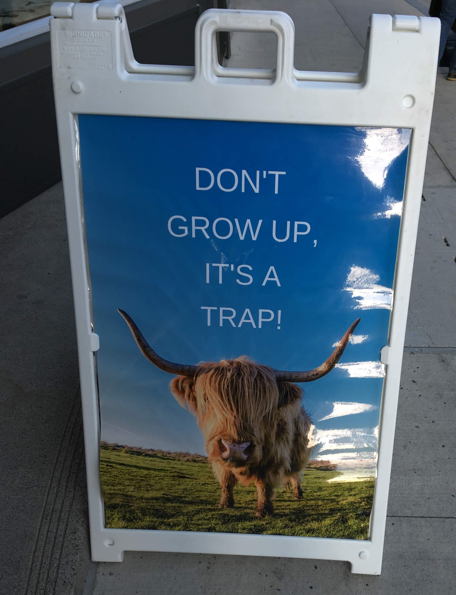

Starting again
I am writing this post while preparing for a new adventure in the Netherlands. Although I am happy to begin a challenge and meet fascinating colleagues, it is undeniable that starting from scratch in an unknown place comes with anxiety and several questions. As someone who has passed through this process two times, let me write down some thoughts about starting again in a new country. In summary, it never gets easy, but the adventure is worth it.
Keywords — immigration, ex-pats, multiculturalism.
Detachment and immigration
Leaving a place is a rollercoaster of emotions. We will inevitably miss relatives, friends, colleagues, and even the cafe where we used to relax. Those emotions may come from the fear of returning and not finding the place as we left it. Indeed, realizing that life in the hometown continues without us is difficult to understand. When I left for Canada, my cousins were kids, and my grandfather was alive; however, four years later, things changed drastically. One must understand such a harsh truth as an immigrant.
Although homesickness is one of the main feelings while moving, curiosity is another ruling emotion. Cultural shocks and daily discoveries keep the enthusiasm inside the new society. Indeed, as a new immigrant, you might be exposed to more cultures than expected. For example, while living in Canada, I celebrated the Lunar new year with colleagues; in Norway, I learnt about the Cobra dance from my Indian friends. Thus, willingness to learn and share about cultures is part of the adventure.
Of course, immigration is more than homesickness and curiosity. The cultural Adjustment process involves complex feelings related to disorientation, adaptation, isolation, frustration, and self-discovery. For instance, a typical adaptation process begins with a honeymoon phase where the immigrant is enthusiastic about the new country. After some time, the person might confront several misunderstandings and issues concerning the unfamiliar society. After some time, those situations get easier to deal with and become the new normal. Finally, the immigrant feels adjusted to the new place.
Embrace your heritage and enjoy the new society
Let us face it, making friends in a new society is always tricky. Even when someone moves to a different high school in the same city, it is not trivial to meet new people. Now, we add a new culture with distinct customs and social norms. In that case, the perfect cocktail for social disorientation is ready. There is no perfect manual on how to fit into a group of people, so your adaptability skills are tested. However, the harsh truth about immigration is that loneliness might be your new best friend. This is not bad in principle because it begins an exciting self-discovery step. But be aware that loneliness is a difficult-to-understand situation.
Have you ever heard about the “Latino time”? This is a clear example of how different societies may perceive time. In Colombia, we tend to take time in an expontaneous manner, so it is expected that people will arrive late for meetings, including professional settings! Norwegians and Canadians may wait for you for 5 minutes. But do not dare to be late in Germany; otherwise, bad things can happen. Such differences may lead the new immigrants to ask questions about their values. While such concerns arise, searching for other immigrants with similar heritage is common. Thus, the immigrant may feel “at home” in the new country. Although such an adaptation strategy is adequate, forming links with the unfamiliar society is still advisable.
Life is about making mistakes
Perhaps the most challenging lesson from life is that making mistakes is okay-ish. Sometimes we forget to reply to a message, say goodbye to someone, or trigger the fire alarm while cooking water. Let me repeat it, making mistakes is part of the day-to-day. As the saying goes, If you fell down yesterday, stand up today (H. G. Wells). Thus, fixing the issue is the real question here.
There will be consequences; thus, whenever a tough decision knocks on the door, here are my two ways to face it: minimizing impacts or going for the high-risk/high-gain scenario. There is no correct answer here; everything depends on the situation. For example, doing the master’s was a high-risk/high-gain for me as I wanted to become a researcher but there was a huge student loan; while moving to the Netherlands was a consequence minimization scenario as the job opportunity was too exciting, but moving to another country is complex.
Nevertheless, my two cents are on the ability to make fast decisions and move one with the results; because time runs while situations require a path to follow. It does not mean making the first decision that passes through your mind is a good idea; but instead analyzing the scenario and possible consequences as soon as possible. And again, the potential outcome in your decision will not be the best one, but get over it and continue the life.

Some final thoughts
As a close friend told me once: “one should live outside the hometown for a while, at least once.” And let me emphasize leaving a hometown is a tough decision. There will be a lot of delusional circumstances, and loneliness might become a routine. But, after 5 years of living outside Medellin, let me say that I would do it again.
*Disclaimer: This post represents my personal opinion. I am not responsible for any content on external sites.